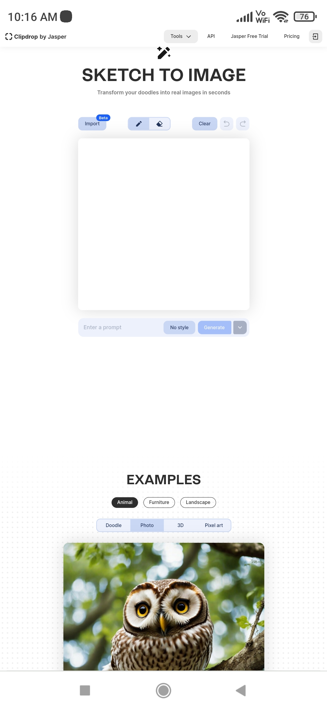

The next generation of artificial intelligence is upon us. Here are five fun, free generative AI tools to try.Artificial intelligence has been with us for decades now, but it’s been having a bit of a moment lately.That’s thanks to a recent confluence of AI-based art generators, chatbots, and other helpful tools that have grabbed headlines and, more importantly, made people’s lives easier.
In that spirit, here’s a handful of great, free AI tools to play around with.
this list of Ai tools are used for photos and videos
1.luma.aiLuma AI: A Revolutionary Platform for 3D Content Creation Have you ever dreamed of creating stunning 3D scenes and assets with just your phone? Or transforming any text into realistic 3D models? Or using the power of Unreal Engine to render volumetric 3D scenes in real time?
If you answered yes to any of these questions, then you should check out Luma AI, a platform that aims to make 3D content creation accessible to everyone. Luma AI is based on cutting-edge AI research that enables photorealistic 3D capture, text-to-3D generation, and real-time rendering of volumetric 3D scenes.
Luma AI has three main products: Fields Editor, Imagine 3D, and Luma Unreal Engine. Fields Editor is an iOS app that lets you capture any object or scene in lifelike 3D with just your phone. You can export your 3D captures to any game engine or use them as photoreal game assets. Imagine 3D is a web app that lets you turn any text into realistic 3D models. You can type anything you can imagine and see it come to life in 3D. Luma Unreal Engine is an alpha version of Unreal Engine 5 that supports fully volumetric Luma NeRFs (Neural Radiance Fields), which are 3D scenes that can be rendered from any viewpoint with unmatched details and reflections.
2.Stable doodle
Stability AI launches Stable Doodle, a sketch-to-image tool that converts a simple drawing into a dynamic image, providing limitless imaging possibilities to a range of professionals and hobbyists.

Bringing a drawing to life has never been made simpler. This new tool from Clipdrop by Stability AI has the ability to dramatically enhance a range of industries, from education to creative design, to fashion and the arts. Stable Doodle is available to try for free on the Clipdrop by Stability AI website, along with the latest Stable diffusion model SDXL 0.9. Stable Doodle is geared toward professionals and novices, regardless of their familiarity with AI tools. With Stable Doodle, anyone with basic drawing skills and online access can generate high-quality original images in seconds. This user-friendly approach enables designers, illustrators, and other professionals to free up valuable time and maximize efficiency. Ideas drawn as sketches can be immediately implemented into works to create designs for clients, material for presentation decks and websites, or even create logos. The possibilities are endless, and it’s super fun!
3.mage.spaceThis time these types of Ai is very useful for creators and designers. it hepls to virtualise creators imagination and creativity.
This user-friendly approach enables designers, illustrators, and other professionals to free up valuable time and maximize efficiency. Ideas drawn as sketches can be immediately implemented into works to create designs for clients, material for presentation decks and websites, or even create logos. The possibilities are endless, and it’s super fun!
Mage.space is a free online AI image generator running on Stable Diffusion. The site has a super easy to use interface and a fast generation time. After your generation is complete, you can click on “Enhance” to automatically upscale your image to 2048×2048. Mage.space is currently using the v1.5 Stable Diffusion model
4.virtualook.wonderhshare.com
AI-Generated Backgrounds Eliminate the need for extensive design skills. As first impressions are crucial in the world of digital retail, a captivating and well-designed product background has the power to influence customer perception, build credibility, and drive sales. By offering a wide range of background options, our AI-driven background generator ensures that you find the perfect complementary background to match your product, enabling it to cater to diverse preferences and styles.
VirtuLook is an AI-powered product photography tool designed to revolutionize the way businesses showcase their products online. Experience the power of AI with virtual model fitting and stunning image creation. With VirtuLook, businesses can effortlessly visualize their clothing creations, experiment with different looks, and bring their designs to life without the need for expensive photo shoots or physical prototypes. The platform also offers AI-driven background generation, ensuring captivating and well-designed product backgrounds that enhance customer perception and drive sales. Features Virtual Model Fitting: Show off different clothes on various bodies with lifelike photos of virtual fashion models, taking into account individual style preferences and body shapes. AI-Generated Backgrounds: Eliminate the need for extensive design skills with a wide range of background options to match your product. Text-Based Photo Generation: Get 10x more photos based solely on textual descriptions, allowing for diverse product visualizations. Streamlined Workflow: Reduce time-to-market, cut production costs, and drive sales conversions with a streamlined process that includes uploading, adjusting, and downloading AI-enhanced product images.
5.supermeme.ai
Meme marketing made easy.
Supermeme.ai lets you create AI memes to get your prospect's attention and stand out from the regular marketing content your competitors put out.
Supermeme.ai lets you create AI memes to get your prospect's attention and stand out from the regular marketing content your competitors put out
Who is it for?
Marketers
Stand out from the crowd by leveraging memes in your marketing
Influencers
Promote ideas and engage with your audience using memes on social media
Sales Reps
Improve reply rates in cold emails and DMs by using memes in your outreach
Educators
Communicate more effectively by using memes in your teaching materials
Our AI meme generator is targeted towards anyone who want to use memes to promote their personal or professional brand
- For students
5.poised ai
Your AI feedback partner in interviews
Poised is your magical AI assistant for better meetings. Prepare with personalized suggestions, speak confidently with real-time feedback and track your progress over time. Private feedback only you can see.
Get feedback on your communication skills in real-time
Designed to be not distracting and immediately actionable. The best part? No one else knows you’re using it.
Stay clear and focused with live speaker notes
Poised automatically brings up your meetings notes and crosses items off as you cover them in the meeting, so you can easily track what's left to cover.
Immediate Actionable feedback on what to try for next time
Poised automatically and instantly provides feedback on what you could do better based on goals of each specific meeting. Track progress on your growth areas over time.
Let AI make follow-ups easier
Get an auto-generated summary and list of action items from each meeting to make follow ups quicker and easier. Without having a bot join your meeting.
6.quizgecko ai
Study better with the help of AI.
Automatically generate online quizzes, tests, and exams to enhance your learning.
generate
Quizzes and Flashcards
Create quizzes, flashcards, and assessments using AI. All this from your existing content.
AI-powered. Turn anything into a quiz, complete with answers and explanations. Upload files like PDFs, DOCs, and PPTs to create quizzes, tests, and flashcards.
Different types of questions. Generate multiple choice, true or false, short answer essay, matching, and fill-in-the-blank style questions.
Study Smarter, Anywhere
Get access to powerful study tools anytime, anywhere with our new app. Forget carrying around heavy textbooks, download the Quizgecko app on the go and be ready for quick revision sessions on the go!
customized quizzes Take pictures of your notes or textbooks and let our AI turn them into quizzes made for you. Choose from different question types to suit your needs.
come top in your exams The essential app for exam season. Create quizzes to test your knowledge and practice without interruption. Get instant feedback to focus on your studies.
7.wisdolia ai
Multiple choice has finally arrivedüî• We've been getting tons of messages like these: - ‚ÄúPLZ GIVE multiple choice‚Äù ‚Äì Kendall - ‚ÄúI would also loveeee to be able get multiple choice questions!!‚Äù ‚Äì Taylor When we listened more closely what we hear was that you love being able to type in answers and get feedback, but sometimes it was too hard to get started. You needed something easier to get started and build momentum with before feeling confident enough to answer the free response questions But on a serious note, how's your geese knowledge?
Do you really know something if you can’t apply what you know to the real world? Not really But it’s always been way easier to test yourself on definitions than to find ways to apply your knowledge. Or at least it was until now We’re launching ai case questions on Wisdolia! It’ll take the key concepts from your document and create case scenario stories to test your skills with This is 1 of 4 big drops we’re announcing this week, so stay tuned for the rest